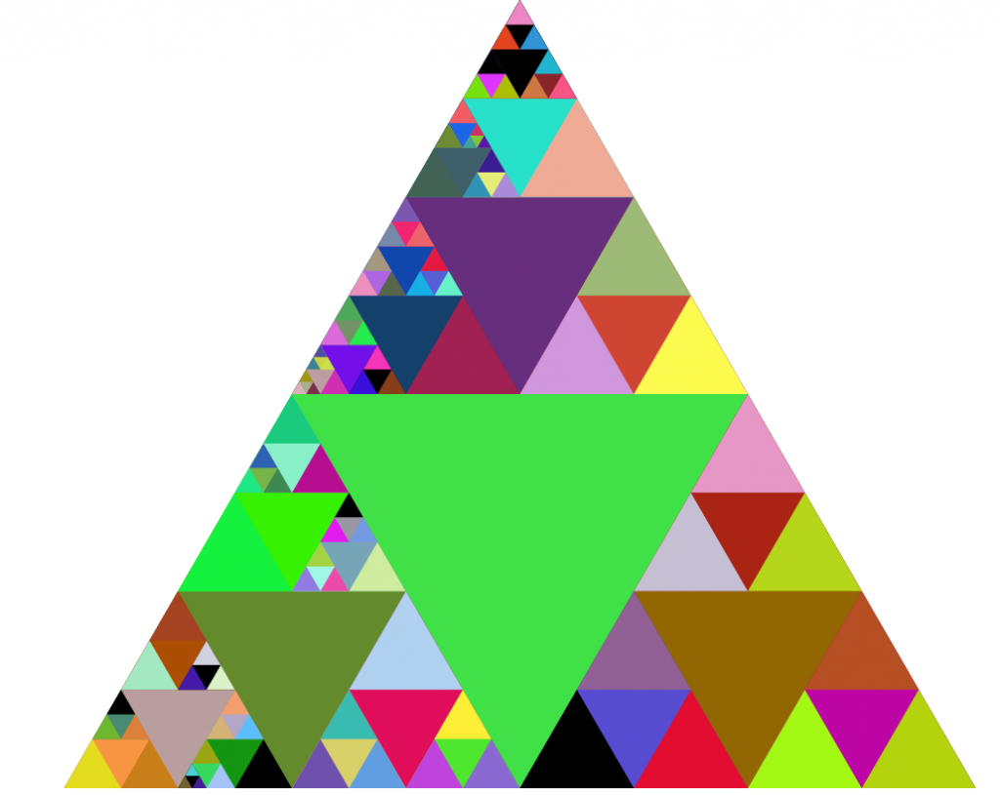

|  |
The Equilateral Triangle is found in physical chemistry where a Triangle Diagram is used to show how 3 different parts of a system are related, relative to each other.
Click inside the triangle below. Three numbers appear beside the cursor and change as you click on different parts of the triangle. Try to guess what these numbers mean.
A, B, and C represent components or parts of a system. The triangle edge given by the line segment AC denotes B=0% (no B) while vertex labeled B denotes B=100% (all B). The same relationship holds for segment AB and vertex C and segment BC and vertex A.
Click on Next. The red line furthest to the right, closest to segment AC, represents B=10%. Moving right to left towards B, the red lines denote percentages of B that increase by 10% increments. Percentages for A and C follow the same logic along their own lines.
See if you can find the point where A=60%, B=10%, and C=30%, and then click on that point to see if you're correct.
Below is a Triangle Diagram for water, flour, and chocolate. The blue circle in the figure shows the relative percentages of these ingredients for cake batter. If the batter is heated to make a cake (yum), do you think the percentages will change?
Click Next. As you can see, cooking the batter to make a cake (brown circle) reduces the percentage of water. Why? Because some water evaporates. The percentages of flour and chocolate also change, since the water percentage changes and the total of all three percentages must be 100. The amounts of flour and chocolate in the batter remain the same during cooking, and this feature is expressed by the ratio of their percentages, which also remains the same.
The harp is one of the earliest stringed instruments and dates back to Ancient Egypt circa 2500 BC.
Not surprisingly, the harp is triangular. The triangular shape allows for strings of different lengths to be placed in succession, from largest to smallest. This arrangement leads to a similar succession of musical notes, from lowest to highest. This order facilitates playing a harp, since it would be challenging to play one if note order was not so logical.
The Right Triangle below represents a harp with four strings.
Click on buttons S1, S2, and S4. Button S1 gives the sound of a C note for the short string in blue. String S2 is 2 times the length of string S1 and gives the sound of a C note that is one octave lower. This same effect occurs when doubling string S2 to get string S4. The sound of S4 is one octave lower than that of S2. Doubling string length to obtain an octave difference in sound holds in the real world, given that strings are made of the same material and have the same thickness.
We can write an equation for the relationship between string length and musical note. Let L0 be the length of string S1 and n be the number of octaves above the note for the string. Then, string length L depends on n as L(n) = 2 nL0.
Click on button S3. String S3 is 3 times longer than the string S1. It gives an F-sharp note that is between the C notes of strings S2 and S4.
As shown above, the strings of our harp define four smaller triangles placed within the harp body. The body of our harp and these four smaller triangles are self-similar objects, meaning that they're identical in shape and each one is simply a re-scaled (enlarged or shrunken) version of the others.
Since the triangles are self-similar, if we double the length of string S1 to get string S2, then we also double the base of triangle S1 to get the base of triangle S2. This pattern holds when we take 3 and 4 times the length of string S1. As a result, the distance between each of the strings, along the base of our harp, is the same. This feature will hold if the lower right angle of our harp takes on any value between 0 and 90 degrees.
There's an interesting connection between forces on an object and triangles. In the circle below is a dot that we can think of as a brown boat in a circular ocean. Let's suppose that the boat moves in a direction that is influenced by three forces: wind, ocean tide, and its own motor. Assume that these forces, when added, produce the net force on the boat.
Click on Wind & Tide and two arrows appear, each extending away from the boat. The black arrow shows the direction of wind and its length represents wind strength. Likewise, the blue arrow shows the direction and strength of the ocean tide.
Now, click on Drift. As you can see, with wind and ocean tide forces and no motor force, the boat drifts away from the center of the ocean. Click on Wind & Tide and Drift buttons again to see different drift conditions due to changes in the wind. Notice that the drift speed slows down as the wind direction becomes more opposing to the tide direction.
What direction and strength of motor force do we need to prevent the boat from drifting? Well, we can determine this graphically, and not surprisingly a triangle is involved.
Click on the Form Triangle button and you'll see that the wind arrow has be re-positioned so that the tide arrow points to its tail (the grey arrow). Notice that the direction and length of the wind arrow remains the same as before. A third orange arrow has been added to form a triangle with the blue and grey arrows. This arrow represents the motor force and direction that's needed to stop the boat from drifting.
Why does this triangle method work? The x-components of the three arrows sum to zero and so do the y-components.
Click on Wind & Tide & Motor. Now, the forces you last examined are shown along with a weak motor force (orange arrow). The grey dot shows how far the orange arrow should extend to stop boat drift. It represents the arrow determined from the triangle method.
Click on Drift to see the result of having a weak motor force. Now, adjust the slider to change the motor force, and then click on Wind & Tide & Motor to see it. Click on Drift to see what it does to the boat.
With the motor force reaching the grey dot, there is no boat drift - thanks to triangles!